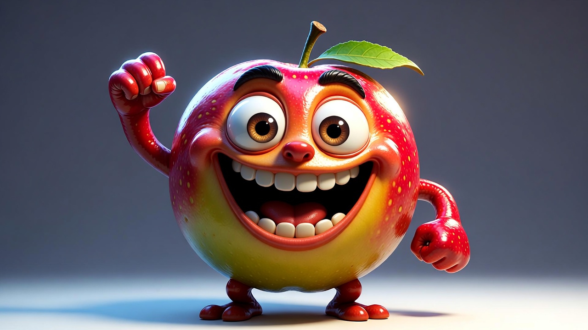
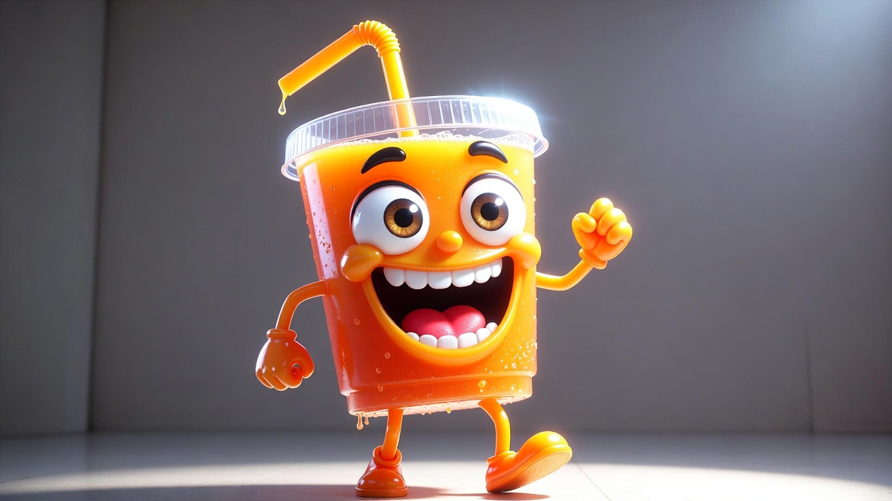

Você sabia que crianças rejeitam, em média, 30% dos itens enviados no improviso? Pare de jogar dinheiro no lixo com frutas que voltam inteiras e recupere sua paz mental antes das 8h da manhã.
Transformamos a montagem das lancheiras em um processo lógico, simples e prático.
Sabe aquela sensação de culpa ao abrir a geladeira e acabar mandando o "Suco Vilão" cheio de açúcar porque não deu tempo de pensar? Ou a frustração de ver a "Maçã Murcha" voltar intocada na mochila?
Isso acaba hoje. O Método 3-2-1 é o guia que segura sua mão e elimina a carga mental de ser "criativa" todo santo dia.

Os pilares essenciais que garantem a energia e o crescimento, selecionados para serem práticos e rápidos.
O segredo para a lancheira não voltar cheia. Itens estratégicos que as crianças amam e que "puxam" o resto do lanche.
Aquele item coringa que você monta em segundos e que dá o equilíbrio final visual e sensorial.
| Lancheira no Improviso | Lancheira com Método 3-2-1 |
|---|---|
| Alta carga mental e estresse matinal | Paz de espírito e clareza total |
| Desperdício de dinheiro (comida no lixo) | Aproveitamento total e economia |
| Sentimento de culpa constante | Missão cumprida com orgulho |
Acesso imediato ao Método 3-2-1 por apenas:
Pagamento seguro e acesso instantâneo.